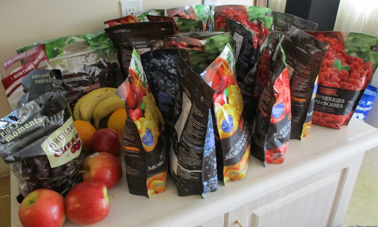

Nutrition Outline
- If you need to make some changes, don't overthink it, just begin. Don't let perfection get in the way of progress. Think long term, with a sensible and sustainable diet plan.
- The Canada Food Guide is a good source of basic information.
- Calorie density (calories per weight of food) is a useful way to categorize foods. Leafy greens would be on one end of this scale, oils would be on the other. Calorie intake can be adjusted by choosing more food from one part of the scale versus another.
- Nutrient density (nutrients per calorie) is another way to categorize foods, beyond just calories. Typically, whole foods will beat processed foods (whole grains over refined grains, pumpkin seeds over pumpkin seed oil and so on).
- Don't fear carbohydrates from whole food sources. Choose oats and millet, potatoes and sweet potatoes and carrots, lentils and chick peas, berries and bananas and so on. Choose these over foods like boxed cereals, most breads, and definitely soft drinks.